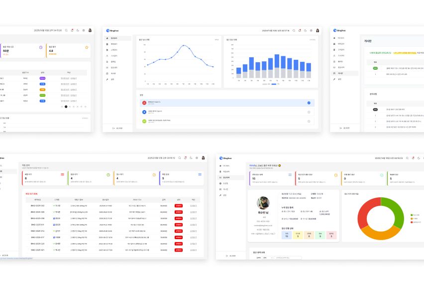
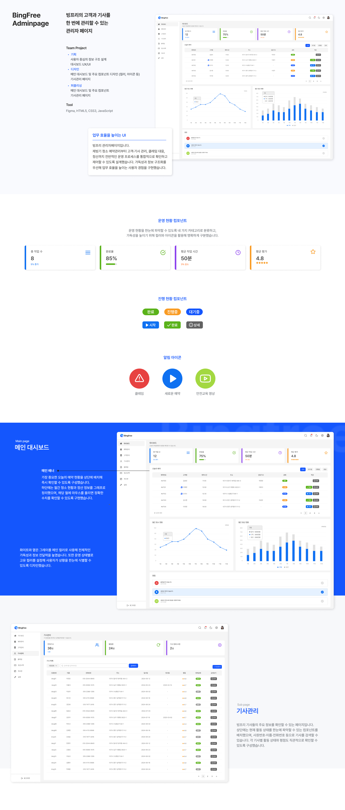

BingFree-AdminPage
제빙기 청소 서비스 회사 빙프리의 <관리자·기사 페이지>입니다.
<관리자·기사 페이지>의 메인 대시보드, 기사 관리 메뉴 및 주요 컴포넌트
의 디자인과 개발을 담당하였습니다. Vue 기반의 컴포넌트 설계를 통해
구조적이고 재사용 가능한 화면을 구현하고, Vue Router로 SPA 환경의
매끄러운 페이지 전환을 제공하였습니다. 이를 통해 개발 효율성을 높이고
직관적이고 일관성 있는 사용자 경험을 강화했습니다.
-
Category
Adaptive Web
-
Tech Stack
HTML, SCSS, Vue, JavaScript, Tailwind, Node.js

